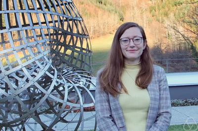

Abstracts Invited Speakers
Invited Speakers

Georgia Institute of Technology, USA
From graph minors to quantum networks
The graph minors series of Robertson and Seymour has had a profound impact on the development of algorithmic graph theory. We discuss how this area has remarkably deep connections to the theory of quantum networks (or graph states, to be more precise). The talk is organized as a tutorial illustrating the connections between these two areas.
TU Darmstadt, Germany
Very Similar, but Not the Same: Local-to-Global Structure, Isomorphism, and Reconstruction
The central theme of this talk is the threshold at which local information about a graph forces its global structure. We thus consider the question of how similar two graphs can be without being isomorphic, and take two complementary perspectives.
On the one hand, to distinguish non-isomorphic graphs, we can compare their substructures. Beyond merely counting occurrences of substructures, we can incorporate additional, efficiently computable information. For example, we can take into account how these substructures are embedded within the graph. One line of work along these lines leads to the Weisfeiler–Leman algorithm and fixed-point logics with counting. Another line of work connects the structure of a graph to properties of its automorphism group.
On the other hand, we can push the local-to-global idea to its limit, bringing us to the reconstruction conjecture. This famous conjecture asks whether a graph is uniquely determined by the collection of all its one-vertex-deleted subgraphs. Despite its fundamental nature, this problem remains open, even for basic graph classes.
The talk surveys the current state of these questions and highlights recent progress on the Weisfeiler–Leman algorithm and on graph reconstruction. In particular, it presents a recent upper bound on the Weisfeiler–Leman dimension and arguments showing that interval graphs are reconstructible.
Test of Time Award Speaker
LIRMM, Université de Montpellier, CNRS, France
Graph Searching on Graphs: A Long Story of Pursuit for Width and Structure
Graph searching studies games on graphs in which searchers try to capture a fugitive under various assumptions on visibility, mobility, recontamination, connectivity, and the information available to the players. Over the last three decades, this perspective has grown into a rich framework at the crossroads of combinatorial games, structural graph theory, and graph algorithms, revealing deep connections between search processes, graph decompositions, and width parameters.
We present the main directions that have emerged from this viewpoint: graph searching as a language for width measures and decompositions, the role of monotonicity, variants such as edge, mixed, connected, and directed search, and interactions with related models, including cops-and-robbers games. We give a brief discussion of some of the challenges in the area and of directions for future research.